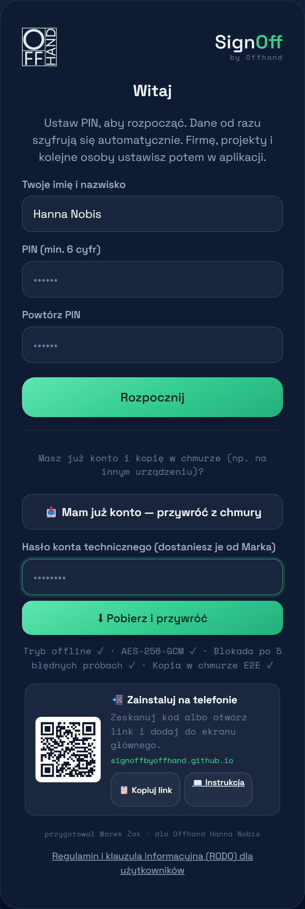

5. Kopia w chmurze i odzyskiwanie
Nie musisz o niczym pamiętać — kopia robi się sama. Ta sekcja przyda się, gdyby telefon się zgubił, zepsuł albo zmieniasz urządzenie.
Jak działa kopia
- Po każdej zmianie aplikacja automatycznie wysyła zaszyfrowaną kopię wszystkich zgód do chmury (Firebase, serwery w UE).
- W chmurze leży wyłącznie „zaszyfrowany bełkot" — bez PIN-u nikt go nie odczyta (więcej w Bezpieczeństwie).
- Trzymana jest też niezmienialna historia kopii (z datami) — nie da się jej skasować ani nadpisać.
Konto i dane na nowym telefonie (przywracanie)
Po zainstalowaniu aplikacji na nowym urządzeniu odzyskasz wszystko w kilka dotknięć — konta (Hania i Marek), projekty, zgody i pliki.

1Zainstaluj aplikację (patrz Instalacja).
2Na ekranie startowym dotknij „📥 Mam już konto — przywróć z chmury".
3Wpisz hasło konta technicznego (dostaniesz je od Marka) → „⬇ Pobierz i przywróć".
4Po chwili pojawiają się konta i dane. Wybierz swoje konto i zaloguj się swoim PIN-em.
Po przywróceniu na liście kont są Hania i Marek — każde loguje się własnym PIN-em. Kopia w chmurze działa dalej sama (zielona odznaka ☁ „połączono" u góry).
Pamiętaj: kopię odszyfrowuje wyłącznie PIN, którym dane były zabezpieczone. Bez właściwego PIN-u kopia jest bezużyteczna (to celowe — chroni przed kradzieżą telefonu). Zapomniany PIN odzyskasz kodem odzyskiwania (przychodzi mailem przy zakładaniu konta) albo prosząc administratora o reset — patrz FAQ.
Alternatywnie (zaawansowane): po zalogowaniu możesz też przywrócić starszą wersję z Ustawienia → ☁ Chmura → „Przywróć z chmury" — jest tam też niezmienialna historia kopii z datami.